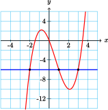
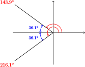
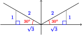
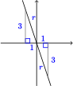
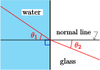

\(\require{cancel}\newcommand{\alert}[1]{\boldsymbol{\color{magenta}{#1}}}
=======
Skip to main content\(\newcommand{\alert}[1]{\boldsymbol{\color{magenta}{#1}}}
>>>>>>> 3ead7ef73f7d8e0b50c44a0f7ee1d8813a51f1bc
\newcommand{\blert}[1]{\boldsymbol{\color{blue}{#1}}}
\newcommand{\bluetext}[1]{\color{skyblue}{#1}}
\delimitershortfall-1sp
\newcommand\abs[1]{\left|#1\right|}
\newcommand\degree[0]{^{\circ}}
<<<<<<< HEAD
\newcommand\Ccancel[2][black]{\renewcommand\CancelColor{\color{#1}}\cancel{#2}}
=======
\renewcommand{\CancelColor}{blue}
>>>>>>> 3ead7ef73f7d8e0b50c44a0f7ee1d8813a51f1bc
\newcommand{\lt}{<}
\newcommand{\gt}{>}
\newcommand{\amp}{&}
\)
<<<<<<< HEAD
Section 1.4 Solving Equations
Subsection What is an Equation?
Equation.
An equation is a statement that two expressions are equal. It may involve one or more variables.
Example 1.53.
Liz makes $6 an hour as a tutor in the Math Lab. Her weekly earnings, \(w\text{,}\) depend on the number of hours she works, \(h\text{.}\) The equation relating these two variables is
\begin{equation*}
w=6h
\end{equation*}
If we know the value of \(h\text{,}\) we can evaluate the expression \(6h\) to find Liz's earnings. For example, if \(h=\alert{7}\text{,}\) then
\begin{equation*}
w=6(\alert{7})=42
\end{equation*}
Liz makes $42 for 7 hours of work.
In the previous Example we used evaluation to find the value of \(w\) when we knew the value of \(h\text{.}\) What if we know the value of \(w\) and want to find \(h\text{?}\) Suppose Liz earned $54 last week. How many hours did she work? To answer this question we substitute \(\alert{54}\) for \(w\text{,}\) so that the equation becomes
\begin{equation*}
\alert{54} = 6h
\end{equation*}
Now we have an equation in just one variable. We would like to find the value of \(h\) that makes this equation true.
Definition 1.54. Solution of Equation.
A value of the variable that makes an equation true is called a solution of the equation, and the process of finding this value is called solving the equation.
Subsection Trial and Error
Some equations are easy enough to solve by trial and error. You can probably see that the solution of the equation \(~54=6h~\) is 9. We can use a table to help us solve a harder equation by trial and error.
EXERCISE 1. One of Aunt Esther's Chocolate Dream cookies contains 42 calories, so \(d\) cookies contain \(c\) calories, and \(c=42d\text{.}\) If Albert consumed 546 calories, how many cookies did he eat? Use trial and error to help you solve the equation \(546=42d\text{.}\)
| \(d\) |
\(5\) |
\(6\) |
\(7\) |
\(8\) |
\(9\) |
\(10\) |
\(11\) |
\(12\) |
\(13\) |
\(14\) |
\(15\) |
| \(c\) |
\(\hphantom{00}\) |
\(\hphantom{00}\) |
\(\hphantom{00}\) |
\(\hphantom{00}\) |
\(\hphantom{00}\) |
\(\hphantom{00}\) |
\(\hphantom{00}\) |
\(\hphantom{00}\) |
\(\hphantom{00}\) |
\(\hphantom{00}\) |
\(\hphantom{00}\) |
\(\vphantom{d=13}\)
Look Ahead.
Trial and error can be time-consuming, especially for complicated equations! In this section we investigate some algebraic methods for solving equations.
Subsubsection Reading Questions
RQ 1.55.
What is an equation?
AnswerAn equation is a statement that two expressions are equal.
RQ 1.56.
What is a solution of an equation?
AnswerA value of the variable that makes an equation true.
Subsection Inverse Operations
Instead of relying on trial and error to solve equations, we will use inverse operations. Try the Exercise below.
EXERCISE 2.
\begin{align*}
\amp \blert{\text{Choose any number for}~x:} \amp x \amp = ~\rule{1cm}{0.15mm}\\
\amp \blert{\text{Multiply your number by 5}:} \amp 5x \amp = ~\rule{1cm}{0.15mm}\\
\amp \blert{\text{Divide the result by 5}:} \amp \dfrac{5x}{5} \amp = ~\rule{1cm}{0.15mm}
\end{align*}
Did you end up with your original number? Try multiplying and dividing your number by another number besides 5. Do you still end up with your original number?
Inverse Operations.
Multiplication and division are opposite or inverse operations, because each operation undoes the effects of the other.
EXERCISE 3.
\begin{align*}
\amp \blert{\text{Choose any number for}~x:} \amp x \amp = ~\rule{1cm}{0.15mm}\\
\amp \blert{\text{Add 4 to your number}:} \amp x+4 \amp = ~\rule{1cm}{0.15mm}\\
\amp \blert{\text{Subtract 4 from the result}:} \amp x+4-4 \amp = ~\rule{1cm}{0.15mm}
\end{align*}
Did you end up with your original number? Try adding and subtracting another number besides 4. Do you still end up with your original number?
More Inverse Operations.
Addition and subtraction are opposite or inverse operations, because each operation undoes the effects of the other.
We see that the opposite operation for multiplication is division, and the opposite operation for addition is subtraction. Now we can solve the equation in Example 1.53.
Example 1.57.
Solve the equation \(~54=6h\text{.}\)
Solution
We will transform this equation into a new one of the form \(h=k\) (or \(k=h\)), where the number \(k\) is the solution.
To do this, we must isolate the variable \(h\) on one side of the equals sign. Because \(h\) is multiplied by 6 in this equation, we divide both sides by 6, like this:
\begin{align*}
\dfrac{54}{\blert{6}} \amp = \dfrac{6h}{\blert{6}} \amp \amp \blert{\text{Divide both sides by 6.}}\\
9 \amp = h
\end{align*}
The solution is 9. Liz worked for 9 hours.
Look Closer.
Note that the expression \(\dfrac{6h}{6}\) says "multiply \(h\) by 6, then divide the result by 6," so we end up with \(h\) again.
In the previous Example, we transformed the equation into a simpler one (namely, \(h=9\)) which tells us the solution. We can use the following operations to transform an equation:
To solve an equation algebraically.
- We can add or subtract the same number from both sides.
- We can multiply or divide both sides by the same number, as long as that number is not zero.
Look Closer.
Our method for solving equations works because of the properties of equality, one for each of the four arithmetic operations. They are listed below.
Addition and Subtraction Properties of Equality.
If the same quantity is added to or subtracted from both sides of an equation, the solution is unchanged. In symbols,
\begin{equation*}
\blert{\text{If}~~a=b,~~ \text{then}~~a+c=b+c~~\text{and}~~a-c=b-c}
\end{equation*}
Multiplication and Division Properties of Equality.
If both sides of an equation are multiplied or divided by the same nonzero quantity, the solution is unchanged. In symbols,
\begin{equation*}
\blert{\text{If}~~a=b,~~ \text{then}~~ac=bc~~\text{and}~~\dfrac{a}{c}=\dfrac{b}{c},~~c\not=0}
\end{equation*}
Applying any one of these properties to an equation produces an equivalent equation: one with the same solutions as the original equation.
Subsection Solving Equations
Now we can solve equations algebraically. We'll start with the simple Example from Section 1.3 about Delbert's and Francine's ages.
Example 1.58.
Francine is exactly four years older than Delbert, so an equation relating their ages is \(F=D+4\text{.}\) How old is Delbert when Francine is 19?
Solution
We must solve the equation
\begin{equation*}
19=D+4
\end{equation*}
We see that 4 has been added to the variable, \(D\text{.}\) To isolate \(D\) on one side of the equals sign, we subtract 4 from both sides of the equation, like this:
\begin{align*}
19 \amp = D+4 \\
\underline{\blert{-4}} \amp = \underline{~~~\,\blert{-4}} \amp \amp \blert{\text{Note that} ~D+4-4=D}\\
15 \amp = D
\end{align*}
The solution to this equation is 15. You can check that substituting \(\alert{15}\) for \(D\) does make the equation true.
\begin{align*}
\blert{\text{Check:}}\amp \amp 19 \amp = D+4 \amp \amp \blert{\text{Substitute}~ 15~ \text{for}~D.}\\
\amp \amp 19 \amp =\alert{15} +4 \amp \amp \blert{\text{True: the solution checks.}}
\end{align*}
Look Ahead.
That last example is easy enough to solve without algebra, but the method will help us with harder problems. Here is a general strategy for solving such equations.
To solve an equation algebraically.
- Ask yourself what operation has been performed on the variable.
- Perform the opposite operation on both sides of the equation in order to isolate the variable.
Subsubsection Reading Questions
RQ 1.59.
What is the opposite operation for subtraction? For multiplication?
RQ 1.60.
What are equivalent equations?
AnswerEquations with the same solutions.
Subsection Problem Solving with Equations
Some problems can be solved by applying one of our familiar formulas.
Example 1.61.
A saving's account at Al's Bank earns 5% annual interest. Jan's account earned $42.50 in interest last year. What was her balance at the beginning of the year?
Solution
First, we choose the appropriate formula. This is a problem about interest, so we use the interest formula:
\begin{equation*}
\blert{I=Prt}
\end{equation*}
Next, we list the values of the variables. (Which variable is unknown?)
\begin{align*}
I \amp = \alert{42.50} \amp r \amp = \alert{0.05}\\
P \amp = \text{unknown} \amp t \amp = \alert{1}
\end{align*}
We substitute the values into the formula:
\begin{equation*}
\alert{42.50}=P(\alert{0.05})(\alert{1})
\end{equation*}
Then we solve the equation:
\begin{align*}
\dfrac{42.50}{0.05} \amp =\dfrac{P(0.05)}{0.05} \amp \amp \blert{\text{Divide both sides by}~0.05.}\\
850 \amp = P
\end{align*}
Finally, we answer the question in a sentence:
\begin{equation*}
\blert{\text{Jan's account balance was }\$850 \text{ at the beginning of the year.}}
\end{equation*}
Many practical problems can be solved by first writing an equation that describes or models the problem, and then solving the equation. We will use three steps to solve applied problems.
Steps for solving an applied problem.
- Identify the unknown quantity and choose a variable to represent it.
- Find some quantity that can be described in two different ways, and write an equation using the variable to model the problem situation.
- Solve the equation and answer the question in the problem.
Example 1.62.
Jerry needs an additional $35 for airfare to New York. The ticket to New York costs $293. How much money does Jerry have?
Solution
We follow the three steps.
- The amount of money Jerry has is unknown.
\begin{equation*}
\blert{\text{Amount of money Jerry has:}~~m}
\end{equation*}
-
The airfare to New York can be described in two different ways:
\begin{equation*}
\begin{alignedat}{5}
\amp \quad m\amp +\amp\quad 35 \amp =\quad \amp ~~ 293{}\\
\amp \,\text{amount }\amp\amp~\text{amount} \amp\amp\text{airfare} \\
\amp\text{Jerry has }\amp\amp\text{he needs}
\end{alignedat}
\end{equation*}
-
We solve the equation and answer the question.
\begin{equation*}
\begin{alignedat}{9}
m \amp{}+ 35\amp \amp{}= ~293 \amp\amp \qquad \blert{\text{Subtract 35 from both sides.}}\\
\amp\underline{{}-{}\blert{35}} \amp \amp\quad \underline{{}-{}\blert{35}}\\
\amp \quad\, m \amp \amp {}= ~258
\end{alignedat}
\end{equation*}
Jerry has $258.
Look Ahead.
Although you may be able to solve the problems in this lesson with arithmetic, the important thing is to learn to write the algebraic equation, or model, for the problem. This skill will help you to solve problems that are too difficult to solve with arithmetic alone.
Subsubsection Reading Questions
RQ 1.64.
What is the first step in solving an applied problem?
AnswerIdentify the unknown quantity and choose a variable to represent it.
RQ 1.65.
True or false: One side of the equation that models a problem will be the unknown variable.
Subsection Skills Warm-Up
Good work!
You've finished the Reading assignment for Section 1.4. Now try the Skills Warm-Up Exercises before the next class meeting.
Exercises Exercises
In Exercises 1–6, choose the correct algebraic expression.
\begin{align*}
m+15\amp\amp m-15\amp\amp 15-m
\end{align*}
1.
Carol weighs 15 pounds less than Garth. If Garth weighs \(m\) pounds, how much does Carol weigh?
2.
Amber and Beryl together planted 15 trees. If Amber planted \(m\) trees, how many trees did Beryl plant?
3.
Fred earned $15 more this week than last week. If he earned \(m\) dollars last week, how much did he earn this week?
4.
Meg bicycled 15 miles farther than Kwan. If Kwan rode \(m\) miles, how far did Meg ride?
5.
There are 15 children in Amy's swim class. If there are \(m\) girls, how many are boys?
6.
The sale price of a sweater is $15 less than the regular price. If the regular price is \(m\) dollars, what is the sale price?
In Exercises 7–12, choose the correct algebraic expression.
\begin{align*}
12p\amp\amp\dfrac{12}{p}\amp\amp \dfrac{p}{12}
\end{align*}
7.
Julian earns $12 an hour. If he works for \(p\) hours, how much will he make?
8.
Farmer Brown collected \(p\) eggs this morning. How many dozen is that?
9.
Melissa bought 12 colored markers. If their total cost was \(p\) dollars, how much did each marker cost?
10.
Rosalind is baby-sitting for \(p\) children. If she brings 12 puzzles, how many will each child get?
11.
Hector has to read 12 chapters in his history text. If he has \(p\) days to complete the assignment, how many chapters should he read per day?
12.
Roma swims 12 laps per day. After \(p\) days, how many laps has she swum?
Solutions Answers to Skills Warm-Up
- \(\displaystyle m-15\)
- \(\displaystyle 15-m\)
- \(\displaystyle m+15\)
- \(\displaystyle m+15\)
- \(\displaystyle 15-m\)
- \(\displaystyle m-15\)
- \(\displaystyle 12p\)
- \(\displaystyle \dfrac{p}{12}\)
- \(\displaystyle \dfrac{p}{12}\)
- \(\displaystyle \dfrac{12}{p}\)
- \(\displaystyle \dfrac{12}{p}\)
- \(\displaystyle 12p\)
Subsection Lesson
Subsubsection Activity 1: Opposite Operations
We can use opposite or inverse operations to "undo" an algebraic expression.
Exercises Exercises
1.
Francine is exactly four years older than Delbert, so
\begin{equation*}
\blert{F=D+4}
\end{equation*}
where \(D\) stands for Delbert's age and \(F\) stands for Francine's age. Fill in the missing values in the table, and think about how you found each one.
| \(D\) |
\(5\) |
\(7\) |
\(\hphantom{0000}\) |
\(10\) |
\(\hphantom{0000}\) |
\(18\) |
| \(F\) |
\(\hphantom{0000}\) |
\(\hphantom{0000}\) |
\(12\) |
\(\hphantom{0000}\) |
\(19\) |
\(\hphantom{0000}\) |
- When we are given a value of \(D\text{,}\) we 4 to find the value of \(F\text{.}\) (Why?)
- When we are given a value of \(F\text{,}\) we 4 to find Delbert's age. (Why?)
2.
Fernando plans to share an apartment with three other students and split the rent equally.
- Let \(r\) stand for the rent on the apartment and \(s\) for Fernando's share. Write an equation for \(s\) in terms of \(r\text{.}\)
-
Fill in the table.
| \(r\) |
\(260\) |
\(300\) |
\(\hphantom{0000}\) |
\(360\) |
\(\hphantom{0000}\) |
\(480\) |
| \(s\) |
\(\hphantom{0000}\) |
\(\hphantom{0000}\) |
\(80\) |
\(\hphantom{0000}\) |
\(105\) |
\(\hphantom{0000}\) |
- Explain how you found the unknown values of \(s\text{.}\)
- Explain how you found the unknown values of \(r\text{.}\)
Subsubsection Activity 2: Solving Equations Algebraically
Follow the Examples below to write out the solution for each Exercise.
Exercises Exercises
1.
Example:
\begin{align*}
\text{Solve} ~~~~x+6 \amp = 11 \amp \amp \blert{\text{6 is added to the variable.}}\\
x+6 \amp = 11 \amp \amp \blert{\text{We subtract 6 from both sides.}}\\
\underline{\blert{-6}} \amp = \underline{\blert{-6}}\\
x \amp = 5 \amp \amp \blert{\text{The solution is 5.}}\\
\amp \amp \amp \text{Check:} ~\alert{5} + 6 = 11
\end{align*}
Exercise: \(~~~\text{Solve} ~~~~5+y = 9\)
\begin{gather*}
\hphantom{0000}\\
\hphantom{0000}
\end{gather*}
2.
Example:
\begin{align*}
\text{Solve} ~~~~n-17 \amp = 32 \amp \amp \blert{\text{17 is subtracted from the variable.}}\\
n-17 \amp = 32 \amp \amp \blert{\text{We add 17 to both sides.}}\\
\underline{\blert{+17}} \amp = \underline{\blert{+17}}\\
n \amp = 49 \amp \amp \blert{\text{The solution is 49.}}\\
\amp \amp \amp \text{Check:} ~\alert{49} -17 = 32
\end{align*}
Exercise: \(~~~\text{Solve} ~~~~x-4 = 12\)
\begin{gather*}
\hphantom{0000}\\
\hphantom{0000}
\end{gather*}
3.
Example:
\begin{align*}
\text{Solve} ~~~~12x \amp = 60 \amp \amp \blert{\text{The variable is multiplied by 12.}}\\
12x \amp = 60 \amp \amp \blert{\text{We divide both sides by 12.}}\\
\dfrac{12x}{\blert{12}} \amp = \dfrac{60}{\blert{12}}\\
x \amp = 5 \amp \amp \blert{\text{The solution is 5.}}\\
\amp \amp \amp \text{Check:} ~12(\alert{5}) =60
\end{align*}
Exercise: \(~~~\text{Solve} ~~~~6z = 24\)
\begin{gather*}
\hphantom{0000}\\
\hphantom{0000}
\end{gather*}
4.
Example:
\begin{align*}
\text{Solve} ~~~~\dfrac{w}{7} \amp = 21 \amp \amp \blert{\text{The variable is divided by 7.}}\\
\blert{7}\left(\dfrac{w}{7}\right) \amp = \blert{7}(21) \amp \amp \blert{\text{We multiply both sides by 7.}}\\
w \amp = 147 \amp \amp \blert{\text{The solution is 147.}}\\
\amp \amp \amp \text{Check:} ~\dfrac{\alert{147}}{7} = 21
\end{align*}
Exercise: \(~~~\text{Solve} ~~~~\dfrac{w}{3} = 6\)
\begin{gather*}
\hphantom{0000}\\
\hphantom{0000}
\end{gather*}
Subsubsection Activity 3: Using Formulas
The distance from Los Angeles to San Francisco is approximately 420 miles. How long will it take a car traveling at 60 miles per hour to go from Los Angeles to San Francisco? Follow the steps to solve the problem:
- Write down the appropriate formula.
- List the given values of the variables.
- Which variable is unknown?
- Substitute the known values into the formula.
- Solve the equation for the unknown variable.
Answer:
Subsubsection Activity 4: Writing Equations
In the following Exercises, concentrate on writing an equation for the problem. Use the hints to help you solve the problems.
Exercises Exercises
1.
A two-bedroom house costs $20,000 more than a one-bedroom house in the same neighborhood. The two-bedroom house costs $405,000. How much does the one-bedroom house cost?
Step 1: Choose a variable for the unknown quantity.
\begin{equation*}
\blert{\text{Cost of the one-bedroom house:}}~\underline{\hspace{5.454545454545454em}}
\end{equation*}
Step 2: Write an equation in terms of your variable.
\begin{align*}
\blert{\text{Cost of one-bedroom house}} \amp + \underline{\hspace{5.454545454545454em}} = \blert{\text{Cost of two-bedroom house}}\\
\underline{\hspace{5.454545454545454em}} \amp + \underline{\hspace{5.454545454545454em}} = \underline{\hspace{5.454545454545454em}}
\end{align*}
Step 3: Solve your equation.
The one-bedroom house costs .
2.
A restaurant bill is divided equally by seven people. If each person paid $8.50, how much was the bill?
Step 1: Choose a variable for the unknown quantity. (What are we asked to find?)
Step 2: Write an equation. Express "each person's share" in two different ways.
Step 3: Solve your equation.
The bill was .
3.
Iris got a 6% raise. Her new salary is $21 a week more than her old salary. What was her old salary?
Step 1: Choose a variable for the unknown quantity.
Step 2: Write an equation. Express "Iris' raise" in two different ways.
Step 3: Solve your equation.
Iris' old salary was .
Subsubsection Wrap-Up
Objectives
In this Lesson we practiced the following skills:
- Solving an equation algebraically
- Using a formula to solve a problem
- Writing an equation to model a problem
Questions to answer before the Homework Preview.
Questions
- How can you check to see whether a given number is a solution of an equation?
- Is the statement \(3+4=12\) an equation? Why or why not?
- Is the statement \(x=4=12\) an equation? Why or why not?
- Describe a two-step strategy for solving an equation algebraically.
- What is the inverse operation for subtraction?
- What is the inverse operation for division?
- In Activity 4, Problem 3, how do we write 6% as a decimal?
Subsection Homework Preview
Here are exercises to try before the end of the class meeting.
Exercises Exercises
Choose the equation that best describes each situation. In each case, \(n\) represents the unknown quantity.
\begin{align*}
n+5 \amp = 30 \amp \amp n-5 \amp = 30\\
5n \amp = 30 \amp \amp \dfrac{n}{5} \amp = 30
\end{align*}
1.
Five less than a number is 30.
2.
The quotient of a number and 5 is 30.
3.
The product of a number and 5 is 30.
4.
Five more than a number is 30.
5.
The price of a concert ticket increased $5 this year and is now $30. How much did a ticket cost last year?
6.
Amir spent 5 dollars and now has 30 dollars. How much did he have before he spent $5?
7.
Marty jogged the same course five days this week for a total of 30 miles. How far did he jog each day?
8.
Five brothers split the cost of a new TV, each paying $30. How much did the TV cost?
Solutions Answers to Homework Preview
- \(\displaystyle n-5=30\)
- \(\displaystyle \dfrac{n}{5}=30\)
- \(\displaystyle 5n=30\)
- \(\displaystyle n+5=30\)
- \(\displaystyle n+5=30\)
- \(\displaystyle n-5=30\)
- \(\displaystyle 5n=30\)
- \(\displaystyle \dfrac{n}{5}=30\)
Exercises Homework 1.4
For Problems 1–2, fill in the table for each equation. Explain how you found the unknown values.
1.
\(q=9+t\)
| \(t\) |
\(2\) |
\(4\) |
\(\hphantom{00}\) |
\(\hphantom{00}\) |
| \(q\) |
\(\hphantom{00}\) |
\(\hphantom{00}\) |
\(15\) |
\(18\) |
2.
\(p=5n\)
| \(n\) |
\(0\) |
\(2\) |
\(\hphantom{00}\) |
\(\hphantom{00}\) |
| \(p\) |
\(\hphantom{00}\) |
\(\hphantom{00}\) |
\(20\) |
\(35\) |
3.
Decide whether the given value for the variable is a solution of the equation.
- \(\displaystyle x-4=6;~~x=10\)
- \(\displaystyle 4y=28;~~y=24\)
- \(\displaystyle \dfrac{0}{z}=0;~~z=19\)
For Problems 4–12, solve and check your solution.
4.
\(x-3=11\)
5.
\(10.6=7.8+y\)
6.
\(3y=108\)
7.
\(42=3.5b\)
8.
\(2.6=\dfrac{a}{1.5}\)
9.
\(x-4=0\)
10.
\(34x=212\)
11.
\(6z=20\)
12.
\(9=k+9\)
For Problems 13–16,
- Choose the appropriate formula to write an equation.
- Solve the equation and answer the question.
13.
Clive loaned his brother some money to buy a new truck, and his brother agreed to repay the loan in 1 year with 3% interest. Clive earned $75 interest on the loan. How much did Clive loan his brother?
14.
Andy's average homework score on eight assignments was 38.25. How many homework points did Andy earn altogether?
15.
How long will it take a cyclist traveling at 13 miles an hour to cover 234 miles?
16.
A roll of carpet contains 400 square feet of carpet. If the roll is 16 feet wide, how long is the piece of carpet?
For Problems 17–22, choose the appropriate equation.
\begin{align*}
x+7\amp = 26 \amp 7x \amp = 26 \amp \dfrac{x}{7} \amp = 26\\
x-7\amp = 26 \amp \dfrac{x}{26} \amp = 7 \amp \dfrac{26}{x} \amp = 7
\end{align*}
17.
Sarah drove 7 miles farther to her high school reunion than Jenni drove. If Sarah drove 26 miles, how far did Jenni drive?
18.
Lurline and Rozik live 26 miles apart. They meet at a theme park between their homes. If Lurline drove 7 miles to the park, how far did Rozik drive?
19.
Doris is training for a triathlon. This week she averaged 26 miles per day on her bicycle. If she rode every day, what was her total mileage?
20.
Glynnis jogged the same route every day this week for a total of 26 miles. How long is her route?
21.
Astrid divided her supply of colored pencils among the 26 children in her class, and each child got 7 pencils. How many pencils does she have?
22.
Ariel lost 7 of the beads on her necklace, and now there are 26. How many were there originally?
Follow the steps to solve Problems 23–26.
23.
Lupe spent $24 at the Craft Fair. She now has $39 left. How much did she have before the Craft Fair?
- What are we asked to find? Choose a variable to represent it.
- Find two ways to express the amount of money Lupe had after the Craft Fair, and write an equation.
- Solve the equation and answer the question in the problem.
24.
Danny weighs 32 pounds more than Brenda. If Danny weighs 157 pounds, how much does Brenda weigh?
- What are we asked to find? Choose a variable to represent it.
- Find two ways to express Danny's weight, and write an equation.
- Solve the equation and answer the question in the problem.
25.
Miranda worked 20 hours this week and made $136. What is Miranda's hourly wage?
- What are we asked to find? Choose a variable to represent it.
- Find two ways to express Miranda's total earnings, and write an equation.
- Solve the equation and answer the question in the problem.
26.
Struggling Students Gardening Service splits their profit equally among their eight members. If each member made $64 last week, what was the total profit?
- What are we asked to find? Choose a variable to represent it.
- Find two ways to express each member's share, and write an equation.
- Solve the equation and answer the question in the problem.
Write algebraic equations to solve Problems 27–29. Follow the steps in the Lesson.
27.
Martha paid $26 less for a suit at a discount store than her mother paid at a boutique for the same suit. If Martha paid $89 for the suit, how much did her mother pay?
28.
Emily spends 40% of her monthly income on rent. If her rent is $360 a month, how much does Emily make?
29.
After she wrote a check for $2378, Avril's bank account shows a balance of $1978. How much money was in Avril's account before the check cleared?
In Problems 30–32, we compare evaluating an expression and solving an equation.
30.
A used car costs $3400 less than the new version of the same model.
- Choose two variables and write an equation for the cost of the used car in terms of the cost of the new car.
- If the new car costs $14,500, how much does the used car cost?
- If the used car costs $9200, how much does the new car cost?
31.
The Dodgers won 60% of their games last season.
- Choose two variables and write an equation for the number of games the Dodgers won in terms of the number of games they played.
- If the Dodgers played 120 games, how many did they win?
- If the Dodgers won 96 games, how many did they play?
32.
Sunshine Industries manufactures beach umbrellas. Their profit on each umbrella is 18% of the selling price.
- Choose two variables and write an equation for the profit on each umbrella in terms of its selling price.
- If a beach umbrella sells for $60, what is the profit?
- If the profit on one umbrella is $7.20, what is the selling price?
=======
Section 5.2 Solving Equations
Subsection Introduction
It is important to distinguish between an algebraic expression and an equation. An equation is a statement that two algebraic expressions are equal. It may be true or false, depending on the values of any variables involved. Here are some examples of equations.
\begin{equation*}
\begin{aligned}[t]
5(2 + 6) \amp = 5(2) + 5(6)\\
\sqrt{3^2 + 4^2}\amp= 3 + 4\\
x^2 + 3x \amp = 10\\
\end{aligned}
\end{equation*}
The first equation is true, the second is false, and the third equation is true only if \(x = 2\) or \(x = -5\text{.}\) When you solve an equation, you are finding the values of the variable that make the equation true.
Example 5.19.
- Evaluate \(~~2x + \sqrt[3]{x - 1}\) for \(x = 9\text{.}\)
- Solve \(~~2x + \sqrt[3]{x - 1} = 20\text{.}\)
Solution
- Substitute \(x = 9\) into the expression to find
\begin{equation*}
\begin{aligned}[t]
2x + \sqrt[3]{x - 1} \amp = 2(\alert{9}) + \sqrt[3]{\alert{9} - 1}\\
\amp = 18 + \sqrt[3]{8} = 20\\
\end{aligned}
\end{equation*}
- We must find a value for \(x\) that makes \(2x + \sqrt[3]{x - 1}\) equal to 20. In part (a) we saw that this expression equals 20 when \(x = 9\text{,}\) so the solution of the equation \(2x + \sqrt[3]{x - 1} = 20\) is \(x = 9\text{.}\)
Checkpoint 5.20.
Use trial and error to find a solution of the equation
\begin{equation*}
2x^3 - 4x = 5x^2 - 3
\end{equation*}
HintTry small integer values for \(x\text{.}\)
You probably remember a number of algebraic techniques for solving equations of different types. Another useful equation-solving method uses graphs.
Example 5.21.
Use a graph to solve the equation \(x^3 - 2x^2 - 5x = -6\text{.}\)
Solution
We graph the expressions on either side of the equation, that is, we graph \(y = x^3 - 2x^2 - 5x\) and \(y = -6\) on the same grid, as shown below.
We are looking for any values of \(x\) where the two \(y\)-values are equal, and these occur at the intersection points of the two graphs. At those points, the \(x\)-values are \(x = -2,~ x = 1\) and \(x = 3\text{,}\) and these are the solutions of the equation. You can check that all three values make the equation true.

Checkpoint 5.22.
Use a graph to show that the equation \(x^2 - 2x + 4 = 0\) has no real-valued solutions.
Answer
The graph does not cross the line \(y = 0\text{.}\)
Subsection Trigonometric Equations
The first Ferris wheel was built for the Chicago World's Fair in 1893. It had a diameter of 250 feet and could carry 2160 people in 36 carriages. From the top of the wheel, passengers could see into four states. After loading all the passengers, the wheel made one revolution in nine minutes.
If you are in the bottom carriage of the Ferris wheel at the start of its revolution, your height after \(t\) seconds is given by
\begin{equation*}
h = f(t) = 139 - 125\cos (\dfrac{2t}{3})
\end{equation*}
For how long are you more than 240 feet above the ground?
The figure below shows a graph of the height function and a horizontal line at \(h = 240\text{.}\)
From the graph, we see that \(h = 240\) at approximately 215 seconds and 325 seconds into the ride. Your height is more than 240 feet between those two times, or for about 110 seconds.
Subsection Solving Trigonometric Equations
In the example above, we used a graph to solve the equation \(h = 240\text{,}\) or
\begin{equation*}
139 - 125\cos (\dfrac{2t}{3}) = 240
\end{equation*}
To find a more precise solution, we can use algebraic methods. As an example, we'll solve the slightly simpler equation
\begin{equation*}
139 - 125\cos\theta = 240
\end{equation*}
We'll look for all solutions for \(\theta\) between \(0\degree\) and \(360\degree\text{.}\) We begin by isolating the trigonometric ratio on one side of the equation.
\begin{equation*}
\begin{aligned}[t]
139 - 125\cos \theta \amp = 240 \amp \amp \blert{\text{Subtract 139 from both sides.}}\\
- 125\cos \theta \amp = 101 \amp \amp \blert{\text{Divide both sides by -125.}}\\
\cos\theta \amp = -0.808\\
\end{aligned}
\end{equation*}
We have solved equations like this one before: we use the inverse cosine to solve for \(\theta\text{.}\) Remember that there are two angles between \(0\degree\) and \(360\degree\) that have a cosine of \(-0.808\text{,}\) one in the second quadrant and one in the third quadrant. The calculator will give us only the second quadrant solution.
\begin{equation*}
\theta = \cos^{-1}(-0.808) = 143.9\degree
\end{equation*}
To find the second solution, we need the third-quadrant angle whose cosine is \(-0.808\text{.}\)
Now, the reference angle for \(143.9\degree\) is
\begin{equation*}
180\degree - 143.9\degree = 36.1\degree
\end{equation*}
and the angle in the third quadrant with the same reference angle is
\begin{equation*}
180\degree + 36.1\degree = 216.1\degree
\end{equation*}
(See the figure at right.) Thus, the other solution is \(216.1\degree\text{.}\)

To solve simple equations involving a single trigonometric ratio (either \(\sin \theta, \cos \theta,\) or \(\tan \theta\)), we can follow the steps below.
To Solve a Trigonometric Equation for \(0\degree \le\theta\le 360\degree\).
- Isolate the trigonometric ratio.
-
Find one solution.
- Give an exact solution if the trig ratio is one of the special values.
- Otherwise use the inverse trig keys on a calculator.
- Use reference angles to find a second solution (if there is one).
Example 5.24.
Solve the equation \(~~8 \sin \theta - 1 = 3\) for \(0\degree \le\theta\le 360\degree\text{.}\)
Solution
We begin by isolating the trig ratio.
\begin{equation*}
\begin{aligned}[t]
8 \sin \theta - 1 \amp = 3 \amp \amp \blert{\text{Add 1 to both sides.}}\\
8 \sin \theta \amp = 4 \amp \amp \blert{\text{Divide both sides by 8.}}\\
\sin \theta \amp = \dfrac{4}{8} = \dfrac{1}{2}\\
\end{aligned}
\end{equation*}
We recognize that \(\sin \theta = \dfrac{1}{2}\) for one of the special angles, namely \(\theta = 30\degree\text{,}\) and also for the obtuse angle \(\theta = 150\degree\text{,}\) as shown at right.

Note that \(\theta = 150\degree\) is the second-quadrant angle with reference angle\(\theta = 30\degree\text{.}\) Because the sine is negative in the third and fourth quadrants, there are no other solutions between \(0\degree\) and \(360\degree\text{.}\) The solutions we want are \(\theta = 30\degree\) and \(\theta = 150\degree\text{.}\)
Checkpoint 5.27.
Solve the equation \(~~5 \tan \theta + 7 = 2\text{,}\) for \(0\degree \le\theta\le 360\degree\text{.}\)
Answer\(\theta = 135\degree~ \text{and}~ \theta = 315\degree\)
We can use a calculator to help us solve equations that do not involve special angles.
Example 5.28.
Solve the equation \(~~3 \tan \beta + 1 = -8\) for \(0\degree \le\theta\le 360\degree\text{.}\) Round your solutions to three decimal places.
Solution
First, we isolate the trig ratio.
\begin{equation*}
\begin{aligned}[t]
3 \tan \beta + 1 \amp = -8 \\
3 \tan \beta \amp = -9 \\
\tan \beta \amp = -3\\
\end{aligned}
\end{equation*}
There are two angles with tangent -3, one in the second quadrant and one in the fourth quadrant. The calculator finds the solution
\begin{equation*}
\tan^{-1}(-3) = -71.565\degree
\end{equation*}
This angle is in the fourth quadrant, but it is not between \(0\degree\) and \(360\degree\text{.}\) The angle we want in is coterminal with \(-71.565\degree\text{,}\) so we add \(360\degree\) to get the first solution:
\begin{equation*}
B = \tan^{-1}(-3) + 360\degree = 288.435\degree
\end{equation*}

The other solution is in the second quadrant, as shown in the figure. This angle is \(180\degree\) less than the fourth quadrant solution:
\begin{equation*}
B = \tan^{-1}(-3) + 180\degree = 108.435\degree
\end{equation*}
Checkpoint 5.30.
Solve the equation \(~~4 \cos C - 6 = -3\text{,}\) for \(0\degree \le\theta\le 360\degree\text{.}\) Round your solutions to three decimal places.
Answer\(C = 41.410\degree~\) or \(~ C = 318.590\degree\)
Some trigonometric equations have no solution. As we can observe from their graphs or from their definitions, the sine and cosine functions only have values ranging from -1 to 1.
Example 5.31.
Solve \(~~\dfrac{\sin \beta}{5} - 3 = 1\text{,}\) for \(0\degree \le\theta\le 360\degree\text{.}\)
Solution
We begin by isolating \(\sin \beta\text{.}\)
\begin{equation*}
\begin{aligned}[t]
\dfrac{\sin \beta}{5} - 3 \amp = 1 \amp \amp \blert{\text{Add 3 to both sides.}}\\
\dfrac{\sin \beta}{5} \amp = 4 \amp \amp \blert{\text{Multiply both sides by 5.}}\\
\sin \beta \amp = 20\\
\end{aligned}
\end{equation*}
Because \(\sin \beta\) is never greater than 1, there is no angle \(\beta\) whose sine is 20. The equation has no solution.
Checkpoint 5.32.
Solve \(~~\cos \theta + 5 = 3\text{,}\) for \(0\degree \le\theta\le 360\degree\text{.}\)
Subsection Graphical Solutions
We can use graphs to approximate the solutions to trigonometric equations.
Example 5.33.
Use a graph to solve the equation \(3\tan B + 1 = -8\text{.}\)
Solution
Graph the equation \(~~y = 3\tan B + 1\) and the horizontal line \(y = -8\) on the same axes, as shown below.
It is difficult to read the graph with much accuracy, but you can use the intersect feature on your calculator to verify that the graph of \(y = 3\tan B + 1\) has \(y\)-value \(-8\) when \(B\) is about \(108.4\degree\) or \(288.4\degree\text{.}\)
Checkpoint 5.34.
Use a graph to verify your solutions to \(~~4 \cos C - 6 = -3\text{.}\)
Subsection Equations with Squares of Trig Ratios
Simple quadratic equations can be solved by extracting roots. For example, to solve the equation
\begin{equation*}
4x^2 + 3 = 15
\end{equation*}
we first isolate \(x^2\text{:}\)
\begin{equation*}
\begin{aligned}[t]
4x^2 \amp = 12\\
x^2 \amp = 3\\
\end{aligned}
\end{equation*}
and then take square roots of both sides to find
\begin{equation*}
x = \pm \sqrt{3} \approx \pm 1.732
\end{equation*}
Recall that a quadratic equation may have two real solutions, one (repeated) real solution, or no real solutions. We can use extraction of roots to solve trigonometric equations as well.
Example 5.35.
Solve \(~~4 \tan^2 \theta + 3 = 15, \) for \(0\degree \le\theta\le 360\degree\text{.}\)
Solution
We begin by isolating the power of tangent, \(\tan^2 \theta\text{.}\)
\begin{equation*}
\begin{aligned}[t]
4\tan^2 \theta \amp = 12\\
\tan^2 \theta \amp = 3\\
\end{aligned}
\end{equation*}
Next, we solve for \(\tan \theta\) by extracting roots.
\begin{equation*}
\tan \theta = \pm \sqrt{3}
\end{equation*}
There are two angles between \(0\degree\) and \(360\degree\) with tangent \(\sqrt{3}\) and two angles with tangent \(-\sqrt{3}\text{,}\) making four solutions to this equation. We know that \(\tan 60\degree = \sqrt{3}\text{,}\) so one of the solutions is \(60\degree\text{.}\)
The tangent function is also positive in the third quadrant, and the angle in the third quadrant with reference angle \(60\degree\) is \(180\degree + 60\degree = 240\degree\text{.}\) The angles in the second and fourth quadrants with reference angle \(60\degree\) have tangent \(-\sqrt{3}\text{.}\) These angles are
\begin{equation*}
180\degree - 60\degree = 120\degree ~~ \text{and} ~~ 360\degree - 60\degree = 300\degree
\end{equation*}
The four solutions are shown at right.
Checkpoint 5.36.
Solve the equation \(~~2\sin^2 \theta = 1,\) for \(0\degree \le\theta\le 360\degree\text{.}\)
Answer\(\theta = 45\degree\text{,}\) \(~\theta = 135\degree\text{,}\) \(~\theta = 225\degree~\text{,}\) or \(~\theta = 315\degree\)
Other quadratic equations can be solved by factoring. For example, we can solve the equation
\begin{equation*}
4x^2 + 4x - 3 = 0
\end{equation*}
by factoring the left side to get
\begin{equation*}
(2x + 3)(2x - 1) = 0
\end{equation*}
Then we apply the Zero Factor Principle to set each factor equal to zero, and solve each equation.
\begin{equation*}
\begin{aligned}[t]
2x + 3\amp = 12 ~~~~~~~~~~2x - 1= 0\\
x \amp = \dfrac{-3}{2} ~~~~~~~~~~~~~~~~~~ x = \dfrac{1}{2}\\
\end{aligned}
\end{equation*}
The solutions are \(\dfrac{-3}{2}\) and \(\dfrac{1}{2}\text{.}\)
Example 5.37.
Solve \(~~2 \cos^2 \theta - \cos \theta - 1 = 0,\) for \(0\degree \le\theta\le 360\degree\text{.}\)
Solution
Compare this equation to the algebraic equation \(2x^2 - x - 1 = 0\text{.}\) Our equation has the same algebraic form, but with \(x\) replaced by \(\cos \theta \text{.}\) We can solve the algebraic equation by factoring \(2x^2 - x - 1\) as \((2x + 1)(x - 1),\) and we'll use the same strategy on the trigonometric equation.
\begin{equation*}
\begin{aligned}[t]
2 \cos^2 \theta - \cos \theta - 1 \amp = 0 \amp \amp \blert{\text{Factor the left side.}}\\
(2\cos \theta + 1)(\cos \theta - 1) \amp = 0 \amp \amp \blert{\text{Set each factor equal to zero.}}\\
\cos \theta \amp = \dfrac{-1}{2} ~~~ \text{or} ~~~~\cos \theta = 1\\
\end{aligned}
\end{equation*}
Now we solve each equation for \(\theta\text{.}\) We know that \(\cos 60\degree = \dfrac {1}{2},\) and the cosine function is negative in the second and third quadrants. The angles in those quadrants with reference angle \(60\degree\) are
\begin{equation*}
180\degree - 60\degree = 120\degree ~~~\text{and} ~~~ 180\degree + 60\degree = 240\degree
\end{equation*}
Also, \(\cos \theta = 1\) when \(\theta = 0\degree\text{.}\) Thus, the original equation has three solutions: \(\theta = 120\degree, ~ \theta = 240\degree,\) and \(\theta = 0\degree.\)
Checkpoint 5.38.
Solve \(~~9 \sin^2 \theta - 3 \sin \theta = 2,\) for \(0\degree \le\theta\le 360\degree\text{.}\) Round your answers to the nearest degree.
Answer\(\theta = 42\degree\text{,}\) \(~\theta = 138\degree\text{,}\) \(~\theta = 199\degree~\text{,}\) or \(~\theta = 341\degree\)
Subsection Snell's Law
When you view an object through a liquid, such as a spoon in a glass of water, or a fish in an aquarium, the object looks distorted or bent. This distortion is caused by refraction of light. Light rays bend when they pass from one medium to another, for instance from water to glass or from glass to air.
A light ray enters the boundary between the two media at a certain angle, called the angle of incidence, but leaves the boundary at a different angle, the angle of refraction. Both angles are acute angles measured from the normal line perpendicular to the boundary, as shown below.
The change of angle is caused by the fact that light travels at different speeds in different media. The relationship between the angle of incidence and the angle of refraction is given by Snell's Law:
\begin{equation*}
\dfrac{\sin \theta_1}{\sin \theta_2} = \dfrac{v_1}{v_2}
\end{equation*}

where \(\theta_1\) is the angle in the medium where light travels at speed \(v_1\text{,}\) and \(\theta_2\) is the angle where light travels at speed \(v_2\text{.}\) The ratio of the speeds is called the index of refraction.
Example 5.39.
The index of refraction from water to glass is 1.1. If light passes from water to glass with a \(23\degree\) angle of incidence, what is the angle of refraction?
Solution
If \(\theta\) is the angle of refraction, then from Snell's Law we have
\begin{equation*}
\begin{aligned}[t]
\dfrac{\sin 23\degree}{\sin \theta} \amp = 1.1 \amp \amp \blert{\text{Multiply both sides by} \sin \theta.}\\
\sin 23\degree \amp = 1.1 \sin \theta \amp \amp \blert{\text{Divide both sides by 1.1.}}\\
\sin \theta \amp = \dfrac{\sin 23\degree}{1.1} = 0.3552\\
\end{aligned}
\end{equation*}
Because \(\sin \theta = 0.3552,~~ \theta = \sin^{-1}(0.3552) = 20.8\degree.\) (For Snell's Law we use only acute angles.) The angle of refraction is approximately \(20.8\degree\text{.}\)
Checkpoint 5.40.
A light ray passes from water to glass with an \(18\degree\) angle of incidence. What is the angle of refraction?
Subsection Algebra Refresher
Exercises Exercises
Each of the following "solutions" contains an error. Find the error, and supply a correct solution.
1.
\begin{equation*}
\begin{aligned}[t]
3x^2 - 5x\amp = 0 \\
3x^2 \amp = 5x\\
3x \amp = 5\\
x \amp = \dfrac{5}{3}\\
\end{aligned}
\end{equation*}
2.
\begin{equation*}
\begin{aligned}[t]
4x^2 - 5x\amp =12 \\
x^2 \amp = 3\\
x \amp = \sqrt{3}\\
\end{aligned}
\end{equation*}
3.
\begin{equation*}
\begin{aligned}[t]
(2x+1)^2\amp = 4 \\
2x+1 \amp = 2\\
2x \amp = 1\\
x \amp = \dfrac{1}{2}\\
\end{aligned}
\end{equation*}
4.
\begin{equation*}
\begin{aligned}[t]
2x^2 - 4x\amp = 3 \\
2x(x-2) \amp = 3\\
2x \amp = 3 ~~~~ x - 2 = 3\\
x \amp = \dfrac{3}{2} ~~~~~~~~~~x = 5\\
\end{aligned}
\end{equation*}
Subsubsection Algebra Refresher Answers
- We can't divide by \(x.~~x = 0, \dfrac{5}{3}\)
- 3 has two square roots. \(~x = \pm\sqrt{3}\)
- 4 has two square roots. \(~x = \dfrac{-3}{2}, \dfrac{1}{2} \)
- One side must be zero to use the zero-factor principle. No real solutions.
Subsection Section 5.2 Summary
Subsubsection Vocabulary
- Equation
- Solve
- Zero Factor Principle
- Angle of incidence
- Angle of refraction
- Normal
Subsubsection Concepts
- An equation is a statement that two algebraic expressions are equal. It may be true or false.
- We can solve equations by trial and error, by using graphs, or by algebraic techniques.
- To solve a trigonometric equation, we first isolate the trigonometric ratio on one side of the equation.
- We use reference angles to find all the solutions between \(0\degree\) and \(360\degree\text{.}\)
- We can use factoring or extraction of roots to solve some quadratic equations.
Subsubsection Study Questions
- How many solutions between \(0\degree\) and \(360\degree\) does the equation \(\cos \theta = k\) have for each value of \(k\) between -1 and 0?
- How many solutions between \(0\degree\) and \(360\degree\) does the equation \(\cos \theta = k\) have for each value of \(k\) greater than 1?
- How many solutions between \(0\degree\) and \(360\degree\) does the equation \(\sin^2 \theta = k\) have for each value of \(k\) between -1 and 0?
Subsubsection Skills
- Use reference angles #1-8
- Solve equations by trial and error #9-14
- Use graphs to solve equations #15-18, #39-52
- Solve trigonometric equations for exact values #19-32, 39-46
- Use a calculator to solve trigonometric equations #33-38, 47-52, 65-68
- Solve trigonometric equations that involve factoring #53-64
Exercises Homework 5.2
For Problems 1–4, find the reference angle. (If you would like to review reference angles, see Section 4.1.)
1.
\(250\degree\)
2.
\(145\degree\)
3.
\(320\degree\)
4.
\(-110\degree\)
For Problems 5–8, find an angle in each quadrant with the given reference angle.
5.
\(18\degree\)
6.
\(35\degree\)
7.
\(52\degree\)
8.
\(78\degree\)
For Problems 9–14,
- Evaluate the expression at the given values of the variable.
- Give one solution of the equation.
9.
- \(\displaystyle x^3 - 3x^2 + 4;~~~x = -1, 0, 1, 2, 3\)
- \(\displaystyle x^3 - 3x^2 + 4 = 0\)
10.
- \(\displaystyle \sqrt{x} + \sqrt{2x+1};~~~x = 0, 2, 4, 6\)
- \(\displaystyle \sqrt{x} + \sqrt{2x+1} = 5\)
11.
- \(\displaystyle \sin \theta + \cos \theta;~~~\theta = 0\degree, 30\degree, 45\degree, 60\degree\)
- \(\displaystyle \sin \theta + \cos \theta = \sqrt{2}\)
12.
- \(\displaystyle \sin^2 \alpha - \cos \alpha;~~~\alpha = 45\degree, 90\degree, 135\degree, 180\degree\)
- \(\displaystyle \sin^2 \alpha - \cos \alpha = 1\)
13.
- \(\displaystyle \sin \beta + 2\cos^2 \beta;~~~\beta = 210\degree, 225\degree, 240\degree, 270\degree\)
- \(\displaystyle \sin \beta + 2\cos^2 \beta = -1\)
14.
- \(\displaystyle 3\cos^2 \phi - \sin^2 \phi;~~~\phi = 270\degree, 300\degree, 315\degree, 330\degree\)
- \(\displaystyle 3\cos^2 \phi - \sin^2 \phi = 2\)
For Problems 15–18, use a graph to solve the equation. Check your solution by substitution.
15.
\(\dfrac{-1}{3}x^2 + \dfrac{2}{3}x + 5 = 0\)
16.
\(0.0625x^2 + 0.5 x = -1\)
17.
\(x^3 + 2x^2 - 6 = 2x^2 + 7x\)
18.
\(8 - 12x + 6x^2 - x^3\)
For Problems 19–32, solve the equation exactly for \(0\degree \le\theta\le 360\degree\text{.}\)
19.
\(3\tan \theta = \sqrt{3}\)
20.
\(7\sin \theta + 11 = 11\)
21.
\(3 = 5 - 4\cos \theta \)
22.
\(6\tan \theta + 21 = 15\)
23.
\(8\sin \theta + 5 = 1\)
24.
\(9\cos \theta + 15 = 6\)
25.
\(0 = \sqrt{2} + 2\sin \theta \)
26.
\(\sqrt{3}\cos \theta = -\dfrac{3}{2}\)
27.
\(\cos^2 \theta - 1 = 0\)
28.
\(1 - \sin^2 \theta = 0\)
29.
\(4\sin^2 \theta - 3 = 0 \)
30.
\(0 = 1 - 2\cos^2 \theta\)
31.
\(1 - \tan^2 \theta = 0\)
32.
\(0 = 6 \tan^2 \theta - 2\)
For Problems 33–38, solve the equation for \(0\degree \le\theta\le 360\degree\text{.}\) Round your answers to two decimal places.
33.
\(\dfrac{1}{2}\tan \theta - 1 = -3\)
34.
\(3\tan \theta - 2 = 4\)
35.
\(3 = 5\cos \theta \)
36.
\(4 = 6\sin \theta\)
37.
\(7 \sin \theta + 2 = 1\)
38.
\(2 = 5 - \dfrac{1}{3} \tan \theta \)
For Problems 39–46,
- Use a graph to estimate the solutions for angles between \(0\degree\) and \(360\degree\text{.}\)
- Solve the equation algebraically.
39.
\(7 - \tan A = 8\)
40.
\(6 = 8\tan w - 2\)
41.
\(5 = 1 - 8\sin \phi\)
42.
\(9 - 4\sin t = 13\)
43.
\(2\cos B - 2 = -2\)
44.
\(2 - 6\cos u = 5\)
45.
\(3 = 2\sin \theta + 4\)
46.
\(5 = 3\cos x + 5\)
For Problems 47–52,
- Use a graph to estimate the solutions for angles between \(0\degree\) and \(360\degree\text{.}\)
- Solve the equation algebraically, rounding angles to the nearest degree.
47.
\(8\sin t + 7 = 4\)
48.
\(9 - 6\cos A = 5\)
49.
\(5\tan B - 4 = -2\)
50.
\(3 - 10\tan C = -11\)
51.
\(1 + 6\cos \phi = -4\)
52.
\(4\sin u - 2 = -1\)
For Problems 53–64, solve the equation for \(0\degree \le\theta\le 360\degree\text{.}\) Round angles to two decimal places.
53.
\(6\cos^2 \theta = 2\)
54.
\(2 - 7\sin^2 \phi = 1\)
55.
\(5\sin^2 \theta + \sin \theta = 0\)
56.
\(4\tan^2 \theta = \tan \theta\)
57.
\(2\cos^2 \theta + \cos \theta - 1 = 0\)
58.
\(\tan^2 \theta - 5\tan \theta + 6 = 0\)
59.
\(6\tan^2 \theta - \tan \theta - 1 = 0\)
60.
\(10\cos^2 \theta - 7 \cos \theta + 1 = 0\)
61.
\(\tan^2 \theta - 2\tan \theta = 15\)
62.
\(\tan \theta = \tan^2 \theta - 0\)
63.
\(\cos^2 \theta - 4\cos \theta + 3 = 0\)
64.
\(\sin^2 \theta + 8\sin \theta + 7 = 0\)
For Problems 65–68, use Snell's Law to answer the question.
65.
A light ray passes from water to glass, with a \(19\degree\) angle of incidence. What is the angle of refraction?
66.
A light ray passes from water to glass, with an \(82\degree\) angle of incidence. What is the angle of refraction?
67.
A light ray passes from water to glass, with a \(32\degree\) angle of refraction. What is the angle of incidence?
68.
A light ray passes from water to glass, with a \(58\degree\) angle of refraction. What is the angle of incidence?
69.
- Use your calculator to graph the function \(y = \tan \theta\) in the ZTrig window (press \(\boxed{\text{ZOOM}}~ \boxed{\text{7}}\)), along with the horizontal line \(y = 2\text{.}\) Use the intersect feature to verify that the solutions of the equation \(\tan \theta = 2\) differ by \(180\degree\text{.}\)
- Repeat part (a) with the horizontal line \(y = -2\) to verify that the solutions of the equation \(\tan \theta = -2\) differ by \(180\degree\text{.}\)
70.
- What is the angle in the third quadrant with reference angle \(\theta\) ? Show this angle differs from by \(180\degree\text{.}\) Explain how this fact shows that the solutions of \(\tan \theta = k\text{,}\) for \(k \gt 0\text{,}\) differ by \(180\degree\text{.}\)
- What is the angle in the second quadrant with reference angle \(\theta\) ? What is the angle in the fourth quadrant with reference angle \(\theta\) ? Show that these two angles differ by \(180\degree\text{.}\) Explain how this fact shows that the solutions \(\tan \theta = k\text{,}\) for \(k \lt 0\text{,}\) differ by \(180\degree\text{.}\)
>>>>>>> 3ead7ef73f7d8e0b50c44a0f7ee1d8813a51f1bc